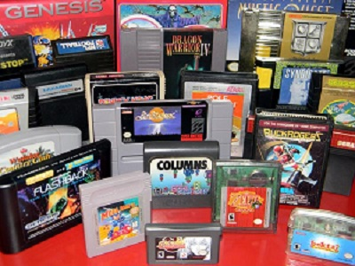

(1972) Le premier jeu connu du grand public
Pong est sorti en 1972 développé par Atari, c'est un jeu de tennis de table simple qui met en scène deux joueurs qui s'affrontent
par rebonds sur un écran monochrome.
Cependant, ce jeu connut un succès remarquable et devint très rapidement un phénomène de société colossale. Pong devient ainsi le premier
jeu vidéo à connaître un succès commercial important, ce qui permet à Atari de prendre une part significative dans l'industrie émergente
du jeu vidéo.
Grâce à Pong, nous avons assisté à l'émergence de machines d'arcade dans les salles de jeux, ainsi qu'à la popularité croissante des jeux
informatiques à domicile.
Pong a également inspiré d’autres personnes et entreprises à créer de nouvelles variétés de jeux vidéo. Il s'agit notamment des jeux récréatifs,
tels que les jeux sportifs, les jeux d'arcade, les jeux de tirs, ainsi que bien d'autres.
(les années 1970) L’apparition des bornes d’arcade
Le début des bornes d’arcades apparu dans les années 1970 ont permis de poser les bases du jeu vidéo.
Ce n’était que des jeux simples avec des graphismes rudimentaires mais leurs forces résidaient dans leur gameplay intuitifs et addictifs. Très vite
un système de point a été mis en place sur les jeux des bornes devenus de vraies jeux culte comme Pac-Man, Tetris ou Pong. Les points permettaient
de classer les différents joueurs dans un classement afficher avant et après une partie. Ces classements ont permis de rendre ces jeux plus addictifs
attirant un public en quête de divertissement mais aussi de compétitions.
Tous ceci a permis aux salles d’arcades de devenir un lieu de rendez-vous pour les jeunes ou les moins jeunes qui chercher du challenge, des défis à
relever en testant leurs réflexes et en repoussant leurs limites pour espérer apercevoir leur pseudo en haut du classement.
(1996) Le passage de la 2D à la 3D
En 1980 la société Atari lance le tous premier jeu en 3D de l’histoire, « Battlezone ». Le jeu consistait à piloter un char d’assaut dans un univers immersifs en 3D.
A la fin de années 80 c’est un jeu du nom de « Hard Drivin », qui devient le premier jeu sur une borne d’arcade à permettre une simulation de pilotage
automobile en 3D, ce qui lui donnera un certain succès.
Mais c’est en 1996 qu’une véritable transition va être faites. Grâce à la sortie de la Sega Saturn, la PlayStation de Sony et de la fameuse Nintendo 64
vont permettre de développés des jeux avec une 3D incroyablement bien développé. C’est la sortie de jeux mythiques tels que « Tomb Raider », « Super Mario
64 » ou « Zelda Ocarina of time ». Fini les déplacements limitaient à la verticalité et à l’horizontalité. Place aux déplacements en 3 dimensions ; place
aux futurs du jeux vidéo.

Innovations technologiques :
Le Scrolling Parallax – Une Profondeur Envoûtante :
Avant que les jeux vidéo ne deviennent aussi vastes que des galaxies, le scrolling parallax développé dans les 80 a fait son entrée sur la scène
du jeu vidéo. Ce mécanisme astucieux a permis de créer l’illusion de profondeur dans des environnements 2D en faisant défiler les différents plans
de décor à des vitesses différentes.
Nous remarquons à peine le phénomène parallaxe dans la vie de tous les jours, mais c’est pourtant l’un des fondements de la perception spatiale.
Si vous faites pivoter votre tête de droite à gauche, vous verrez que la position relative des objets dans votre champ de vision change. Les objets
qui sont proches de vous se déplaceront devant les objets qui sont plus éloignés et les recouvriront. Alors que les objets au premier plan semblent
se déplacer relativement rapidement, il n’y a pratiquement pas de mouvement pour les objets plus éloignés. Cet effet d’optique est particulièrement
visible sur les trajets en train ou en voiture.
Les Passwords – L’Art de la Continuité :
Bien avant que les sauvegardes automatiques apparaissent dans le monde du jeu vidéo. Les développeurs ont inventé un autre moyen de reprendre la partie
là où on l’avait arrêté. Cette mécanique sont les passwords et sont très vite devenu un incontournable pour les joueurs.
Il s’agissait de combinaisons de caractères alphanumériques permettaient de reprendre sa partie là où on l’avait laissée, même après avoir éteint sa
console. Les passwords ont offert aux jeux rétro une continuité inédite, donnant aux joueurs la possibilité de prendre une pause bien méritée, puis
reprendre leur quête épique où il l’avait laissé. Il suffisait de noter scrupuleusement sur un bout de papier les codes pour pouvoir reprendre
l’aventure plus tard.
Ce superbe système contournant les capacités de stockage de la cartouche a permis de réduire à néant la frustration de devoir tout recommencer sur
des jeux où on y’avait déjà investi beaucoup de notre précieux temps.
Les cartouches de jeu – Le chemin vers un monde plus vaste :
La toute première console qui utilisera les cartouches de jeu, la Fairchild Channel F, sorti en 1976 grâce à une idée de Jerry Lawson, le « père de
la cartouche de jeu vidéo ». Cette brillante idée allait révolutionner le monde du jeu vidéo.
Une cartouche de jeu n’est en réalité qu’un étui possédant une mémoire morte contenant généralement un logiciel ou des lignes de codes pour un jeu vidéo.
Ensuite on raccorde cette mémoire morte à un ordinateur ou une console de jeu vidéo.
Après avoir été surtout utilisé dans des ordinateurs personnels dans les années 80, c’est Nintendo qui va décider d’intégrer des cartouches avec sa
nouvelle console, la NES. Elles permettent de n’avoir aucun temps de chargement, de directement d’accéder au contenu en plus d’être difficilement
endommageable.